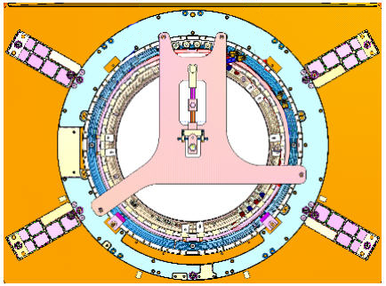
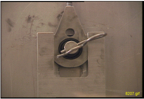
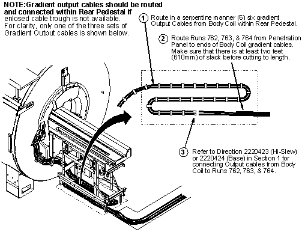
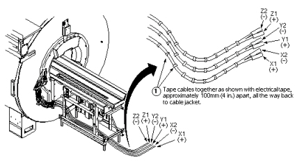

Operating Documentation
Direction 5440001-3, Rev# 6
Signa HDxt Service Methods
Module Version 8.0, Version Date 11/9/09
Operating Documentation |
| Required Persons | Preliminary Reqs | Procedure | Finalization |
|---|---|---|---|
| 3 | Not Applicable | 3-5 | Not Applicable |
| Item | Qty | Effectivity | Part# | Manufacturer | |
|---|---|---|---|---|---|
| Non-magnetic Tool Kit | 1 | - | 2385097 or 5112581 | - | |
| Gradient Insertion Tool Kit | 1 | - | 2164744-5 or greater | - | |
| BRM/BRM-D/CRM Cart | 1 | - | 2134810 | - | |
| Aluminum Cradle | 1 | - | 2134810-2 | - | |
| Cable Crimper/Stripper Kit | 1 | - | 2134776 | - | |
| Poron Seal, for air cover | 1 | - | 2185175 | - | |
| Poron Seal | 4 | - | 2181231 | - | |
| Poron Seal | 8 | - | 2181231-2 | - | |
| Splice kit | 1 | - | 2241521 | - | |
| Personal Protection Equipment | 1 | - | - | ||
| Composed of : | |||||
| Gloves | 1 | - | - | ||
| Safety Glasses | 1 | - | - | ||
| Safety Shoes | 1 | - | - | ||
| Long Sleeve Shirts and Pants | 1 | - | - | ||
| 5 Gallon Bucket to Collect Coolant | 1 | - | 2239133 | - | |
| Authorized Personnel Floor Sign | 1 | - | 2289812 | - | |
| Item | Qty | Effectivity | Part# | Manufacturer |
|---|---|---|---|---|
| Bostic Brand Never-Seeze Compound | 1 | - | 46-294151P8 | - |
| Red Loctite # 271 | 1 | - | 46-170686p3 | - |
| Blue Loctite # 242 | 1 | - | 46-170684p2 | - |
| Ty-wraps | 5 | - | - | - |
| Isopropyl Alcohol | 6 oz | - | - | - |
| M10x30 Socket Hd Cap Screw, SS | 6 | - | 2109867-24 | Fastenal |
| M10x30 Hx Hd Cap, SS (Can be Used Instead of M10x30 Socket Hd Cap Screw) | 6 | - | 2109866-21 | Fastenal |
| Flat Washer SS, 10.5mm | 6 | - | 2184009 | Fastenal |
| G10 Washer, 10.5mm | 6 | - | 2370892 | - |
| ||||
| Strong Magnetic Field! | ||||
| Ferrous materials can become dangerous projectiles in the presence of the magnetic field Produced by the Signa Magnet. | ||||
| Do not Bring any ferromagnetic tools or equipment into the magnet room. |
| ||||
| Dangerous Work Area! | ||||
| Use of heavy equipment for coil removal and replacement presents hazards to all personnel in the area. | ||||
|
| Condition | Reference | Effectivity |
|---|---|---|
Perform the procedures listed in Pre-Requisite Procedures. | - | - |
| NOTE: | Changes have been made to the Gradient Insertion tool, part 2164744-6 and greater (such as 2164744-7). Use the parts noted below when replacing either BRM or TRM. |
Attach plates 5161983 and 5161985 to either the BRM or TRM gradient coil. Secure to gradient coil using M10 x 120 studs. Thread the studs at least 1/4 inch (6 mm) into the coil. See Illustration 1. The CRM gradient coil will have separate plates (part number 2187590, qty=2).
Illustration 1: Gradient Mounting Plates

Attach Rear Plate to the magnet as shown below. There are standoffs on this plate that should remain in place. Secure Rear Plate to magnet using M10 x 80 studs, washers and M10 nut. See Illustration 2.
Illustration 2: Attaching Rear Plate to Magnet

Obtain the Male Insertion Tube (2284929) and XRMB Tube Standoff (5191626). Attach the Tube Standoff to the Male Insertion Tube using the 4 inch, 0.375-16UNC Hex Socket Screw (5303993) included in the Gradient Coil Insertion and Lift Kit. Once the Standoff is secured to the Tube, attach the Tube Pilot Shaft to the Standoff as shown in Illustration 3.
Illustration 3: Attaching Standoff to Insertion Tube

Proceed with Gradient Coil Replacement .
Move the new Gradient coil and cradle/cart assembly into the magnet room. Position the cart in front of the magnet and center the cart left/right in respect to the patient bore. Provide enough room for an FE to stand between the cart and the magnet so the FE can thread the support tube sections together.
Attach proper gradient plates to new coil. Studs must be seated approximately 3/8 inch (12 mm) into the gradient coil.
Release the handle to set the cart brakes so the cart will not move after the cart is aligned to the magnet bore.
Adjust the height of the cart so the end of the Tube is the same height as the Tube in the warm bore of the magnet.
Slowly thread the Tube sections together.
| NOTE: | Be very careful not to force the threads. Make vertical or horizontal adjustments, as necessary, to the alignment bearing or cart for an easy fit. |
Slowly install the tube, shaft end first, through the front Tube Guide Roller Assembly, then through the rear Tube Guide Roller Assembly and finally guide the shaft through the alignment bearing.
| NOTE: | Be very careful not to force the shaft through the alignment bearing. Make vertical or horizontal adjustments to bring the alignment bearing in alignment with the tube shaft |
Install the cotter pin after the shaft is in place. See Illustration 4.
Illustration 4: Install Cotter Pin

Remove the rope from the enclosure frame bracket.
Go to the rear of the magnet. Adjust the Alignment Bearing in the vertical direction and watch for the tube to make contact to the upper roller on the rear Tube Guide Roller Assembly. Continue to raise the Alignment Bearing until the back end of the Gradient coil starts to raise off of the cradle.
| NOTE: | When this happens the load at the back end of the Gradient coil is transferred from the cradle to the Support Tube and magnet. |
Slowly push the Gradient coil toward the magnet on the rollers until there is enough clearance to install the Tube Jacking assembly.
Install the Tube Jacking assembly and align it, Left/Right, to the center of the Tube.
Operate the jack to raise the tube to allow for the removal of the Gradient coil Roller assemblies.
Remove the Gradient coil Roller Assemblies and return these parts to the shipping case.
Check for proper clearance around the Gradient coil assembly in respect to the magnet bore opening. Make adjustments to the jack and alignment bearing to produce a fit that is symmetrical and level to the bore.
Slowly push the Gradient coil into the magnet bore and watch the clearance at both ends. Make sure the Gradient coil is elevated high enough in order for the Gradient coil support bracket to clear the End Flange Bracket at the back end of the magnet. Continue to install until the Gradient coil is centered from front to back in the bore.
| ||||
| Failure to use the correct length bolt for the end flange brackets could result in damage to the vacuum vessel. | ||||
Before installing the Mount Support Plate Bracket 2240708 on the magnet rear, remove the support hardware. The current design calls for M10x30 SHCS/SS at 5 and 7 O’clock positions and M10x40 SHCS/SS to attach the phenolic cable block in the center. The HDe / HDx program uses M10x30 SHCS/SS at all four locations (with no phenolic block). Use SS 10.5mm Flat Washers (2184009) and G10 Flat 10.5mm Washers (2370892) under the head of each M10x30 bolt (note the SS Washer should be directly under the Bolt Head). Clean all hardware with alcohol before installation and ensure that the bolts do not bottom out in the Magnet Interface Ring during installation. Ensure the G10 and SS Washers are captured firmly by the bolt clamp load and no vibration/movement is possible (potential White Pixel source). Apply Never-Seeze to all bolt threads prior to installation.
When installing the Mount Support Plate Bracket 2240708 on the magnet front, remove the support hardware. The current design calls for M10x30 SHCS/SS at all four locations coupled with SS 10.5mm Flat Washers (2184009) and G10 Flat 10.5mm Washers (2370892) under the head of each M10x30 bolt (note the SS Washer should be directly under the Bolt Head). Clean all hardware with alcohol before installation and ensure that the bolts do not bottom out in the magnet Interface Ring during installation. Ensure the G10 and SS Washers are captured firmly by the bolt clamp load.
| NOTE: | Several sites have noted White Pixel issues associated with the Mount Support Plate Hardware Installation. Please ensure that the M10x30 hardware does not bottom out in the magnet interface ring. The G10 washer and SS washers are used to eliminate galling on the Mount Plate Surface, control the hardware stack-up, and reduce metal-to-metal contact. |
Install the Mount Support Plates (2240708) on the front and rear of the magnet and ensure to use the M10x30mm hardware as noted, 10.5mm Flat SS Washers, and Flat G10 10.5mm Washers as noted. Do not force the bolts when threading into the flange and ensure to apply Never-Seeze to the bolt thread prior to installation. The stainless steel hardware can easily gall / seeze in the Magnet Interface Ring if any thread damage is present.
Align the Gradient coil Support Bracket holes to the End Flange Bracket holes using the the M10 x 40 bolts. Do Not tighten the bolts until the Gradient coil Support Bracket is flush against the End Flange Bracket. This is accomplished in Step 20.
If this site has the Gradient Isolation Kit make sure the rubber pads are inserted between the BRM bracket and the end flange bracket. Make sure the coil has the proper rotation by aligning the bracket on the gradient coil to the bracket on the magnet. Make sure the weight of the gradient coil is transferred to the end flange bracket, not the spacer.
Slowly lower the BRM until the BRM weight has transferred from the Support Tube to the Support Brackets. Make sure the outer diameter of the BRM is concentric to the inside diameter of the warm bore. In other words the measured gap is the same between the BRM coil and the warm bore at all accessible points on the circle.
Remove the Female Support Tube and return this part to the shipping case.
Remove the Male Support Tube with cotter pin and return this part to the shipping case.
Remove the cart/cradle from the magnet room. Remove the Tube Jacking Assembly from the cradle and return this part to the shipping case.
Remove the Tube Support Plate Mounting Hardware from the rear end flange and return these parts to the shipping case.
Remove the two Tube Guide Roller Assemblies from the Gradient coil and return this part including the mounting hardware to the shipping case.
Perform this step only if one coil cart is used. Lift the defective Gradient coil and cradle from the ground to the cart and secure in place in preparation for shipment.
Install Radial Support Blocks.
Install the air seals around the Gradient Coil.
Install the Terminal Block on CX Magnets. (The Terminal Block is not used on an LCC Magnet, cables are routed as shown in Illustration 5)
Illustration 5: Routing of Cables

| NOTE: | Illustration 5 shows a typical cable routing for connection of the gradient output cables within an enclosed cable trough. If Site does not have enclosed cable trough, cables must be routed in serpentine manner and connected within Rear Pedestal as shown in Illustration 6. |
Illustration 6: Serpentine Cable Routing

Attach the water lines to the Gradient coil.
Connect spliced cables. See Illustration 7 and Illustration 8. The gradient coil connections are as follows:
| X1 | = | X+ |
| X2 | = | X- |
| Y3 | = | Y+ |
| Y4 | = | Y- |
| Z5 | = | Z+ |
| Z6 | = | Z- |
Illustration 7: Cable Preparation

Illustration 8: Connecting Spliced Cables

Attach RF and bias cables.
Re-install the remaining patient handling and enclosure parts.
Perform Prerequisite Procedures in reverse order.
Finished
No finalization steps.